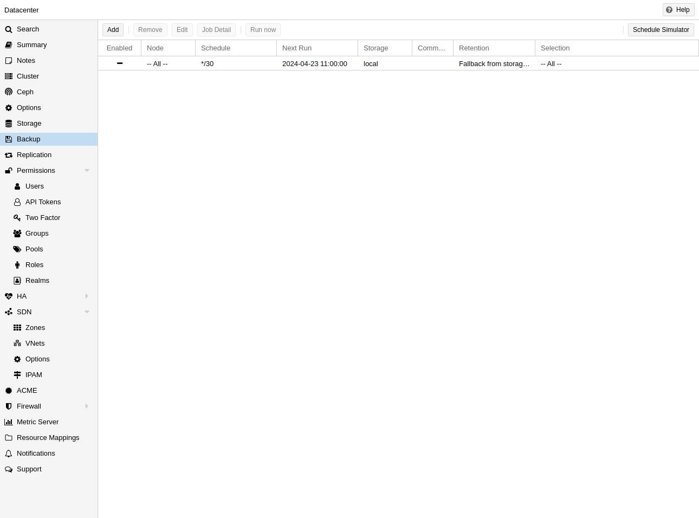
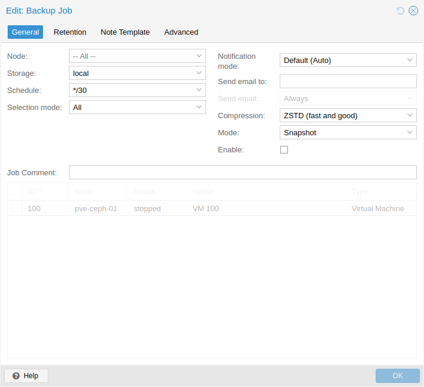
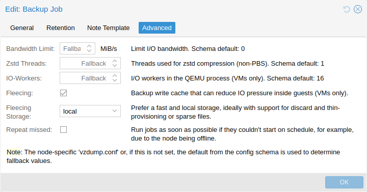

Besides triggering a backup manually, you can also setup periodic jobs that
backup all, or a selection of virtual guest to a storage. You can manage the
jobs in the UI under Datacenter → Backup or via the /cluster/backup API
endpoint. Both will generate job entries in /etc/pve/jobs.cfg, which are
parsed and executed by the pvescheduler daemon.

A job is either configured for all cluster nodes or a specific node, and is
executed according to a given schedule. The format for the schedule is very
similar to systemd calendar events, see the
calendar events section for details. The
Schedule field in the UI can be freely edited, and it contains several
examples that can be used as a starting point in its drop-down list.
You can configure job-specific retention options overriding those from the storage or node configuration, as well as a template for notes for additional information to be saved together with the backup.
Since scheduled backups miss their execution when the host was offline or the
pvescheduler was disabled during the scheduled time, it is possible to configure
the behaviour for catching up. By enabling the Repeat missed option (in the
Advanced tab in the UI, repeat-missed in the config), you can tell the
scheduler that it should run missed jobs as soon as possible.

There are a few settings for tuning backup performance (some of which are
exposed in the Advanced tab in the UI). The most notable is bwlimit for
limiting IO bandwidth. The amount of threads used for the compressor can be
controlled with the pigz (replacing gzip), respectively, zstd setting.
Furthermore, there are ionice (when the BFQ scheduler is used) and, as part of
the performance setting, max-workers (affects VM backups only) and
pbs-entries-max (affects container backups only). See the
configuration options for details.